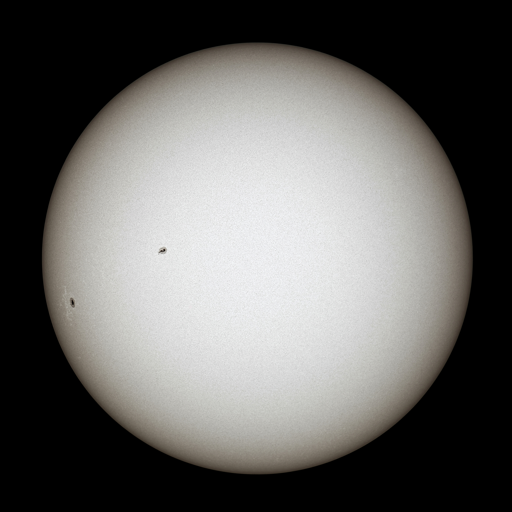

Słońce
Słońce to olbrzymia gwiazda w centrum naszego Układu Słonecznego. Jest jedyną gwiazdą w naszym systemie i zawiera 99,86% całej jego masy! Energia Słońca powstaje w wyniku fuzji jądrowej, gdzie atomy wodoru łączą się w hel. Bez Słońca nie byłoby życia na Ziemi, ponieważ to nasze Słońce dostarcza ciepła i światła, które są niezbędne dla wszystkich organizmów żywych.
📊 Podstawowe Dane Astronomiczne
🎨 Model w Skali 1 : 10 000 000 000
Średnica modelu
Położenie na modelu
⭐ Czym jest gwiazda?
Gwiazdy to olbrzymie kule gorącego gazu, które świecą dzięki fuzji jądrowej. W jądrze Słońca atomy wodoru zderzają się ze sobą z ogromną siłą i łączą się w atomy helu. Energia uwolniona w tym procesie rozpromienia się wszędzie w kosmos. Słońce to gwiazda średniej wielkości, zwana "żółtym karłem". Jest wiele gwiazd znacznie większych i gorętszych niż nasze Słońce!
☀️ Ciekawostki
- Słońce jest tak duże, że jego wnętrze mogłoby pomieścić 1,3 miliona Ziem!
- Co sekundę Słońce spala 600 milionów ton wodoru
- Światło ze Słońca dociera do Ziemi w ciągu około 8 minut i 20 sekund
- Na powierzchni Słońca pojawiają się mroczne plamy słoneczne, które mogą być większe niż Ziemia
- Słońce obraca się wokół galaktyki Drogi Mlecznej co około 250 milionów lat
- W jądrze Słońca temperatura wynosi około 15 milionów stopni Celsjusza!